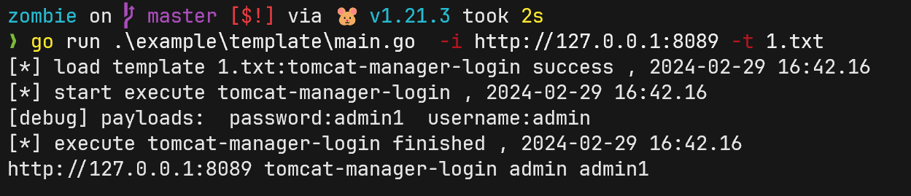

拓展
zombie的拓展分为两种
- 通过go编写的原生插件, 可以调用第三方库, 处理一些较为复杂的认证逻辑. 例如各种数据库, telnet等较为复杂的模块.
- 通过neutron tamplate支持的模块, 用来处理使用http协议认证的服务或较为简单的socket通讯协议
go原生插件¶
需要实现以下接口.
type Plugin interface {
Name() string
Unauth() (bool, error)
Login() error
Close() error
GetResult() *pkg.Result
}
这是一个简单的示例:
mysql未授权探测与爆破
type MysqlPlugin struct {
*pkg.Task
input string
conn *sql.DB
}
func (s *MysqlPlugin) Name() string {
return s.Service
}
func (s *MysqlPlugin) Unauth() (bool, error) {
// mysql none pass
mysql.SetLogger(nilLog{})
dataSourceName := fmt.Sprintf("%v:%v@tcp(%v:%v)/?timeout=%ds&readTimeout=%ds&writeTimeout=%ds&charset=utf8", "root",
"", s.IP, s.Port, s.Timeout, s.Timeout, s.Timeout)
conn, err := sql.Open("mysql", dataSourceName)
if err != nil {
return false, err
}
err = conn.Ping()
if err != nil {
return false, err
}
s.conn = conn
return true, nil
}
func (s *MysqlPlugin) Login() error {
mysql.SetLogger(nilLog{})
dataSourceName := fmt.Sprintf("%v:%v@tcp(%v:%v)/?timeout=%ds&readTimeout=%ds&writeTimeout=%ds&charset=utf8", s.Username,
s.Password, s.IP, s.Port, s.Timeout, s.Timeout, s.Timeout)
conn, err := sql.Open("mysql", dataSourceName)
if err != nil {
return err
}
err = conn.Ping()
if err != nil {
return err
}
s.conn = conn
return nil
}
func (s *MysqlPlugin) GetResult() *pkg.Result {
return &pkg.Result{Task: s.Task, OK: true}
}
func (s *MysqlPlugin) Close() error {
if s.conn != nil {
return s.conn.Close()
}
return pkg.NilConnError{s.Service}
}
这个插件实现了mysql的未授权探测与通过自定义的账号密码爆破.
template动态加载的插件¶
zombie使用了与gogo相同的template引擎 neutron, 并复用了gogo的template仓库中的login部分.
只需要对原版的nucleipoc进行简单的修改, 即可移植给gogo与zombie使用.
从nuclei仓库中移植template到neutron¶
step1 挑选与剪枝
克隆 https://github.com/chainreactors/templates 到本地, 操作更方便
挑选合适的template, 例如tiny-file-manager-default-login
id: tiny-filemanager-default-login
info:
name: Tiny File Manager - Default Login
author: shelled
severity: high
description: Tiny File Manager contains a default login vulnerability. An attacker can obtain access to user accounts and access sensitive information, modify data, and/or execute unauthorized operations.
reference:
- https://github.com/prasathmani/tinyfilemanager
- https://tinyfilemanager.github.io/docs/
classification:
cvss-metrics: CVSS:3.0/AV:N/AC:L/PR:N/UI:N/S:C/C:L/I:L/A:L
cvss-score: 8.3
cwe-id: CWE-522
metadata:
verified: true
max-request: 3
shodan-query: html:"Tiny File Manager"
tags: default-login,tiny,filemanager
http:
- raw:
- |
GET / HTTP/1.1
Host: {{Hostname}}
- |
POST / HTTP/1.1
Host: {{Hostname}}
Content-Type: application/x-www-form-urlencoded
fm_usr={{user}}&fm_pwd={{pass}}&token={{token}}
- |
GET /?p= HTTP/1.1
Host: {{Hostname}}
attack: pitchfork
payloads:
user:
- admin
pass:
- admin@123
skip-variables-check: true
host-redirects: true
max-redirects: 2
matchers-condition: and
matchers:
- type: word
words:
- 'admin'
- 'You are logged in'
- 'Tiny File Manager'
condition: and
- type: status
status:
- 200
extractors:
- type: regex
name: token
part: body
regex:
- '([a-f0-9]{64})'
internal: true
删除掉neutron中无用的部分(其实忽略这一步也没问题, 为了编译后的文件体积着想), 删除掉metadata, classification等内容
step2 添加关键字段
为了能支持从gogo中直接导入到zombie, 因此需要绑定gogo的指纹. 需要在指纹仓库下搜索对应的指纹名字.
如果tag中已经有了指纹名字. 这个指纹可以不做任何修改就在neutron中使用.如果没有, 则需要手动绑定指纹名字
id: webmin-default-login
finger:
- Tiny-FileManager
- Tiny....
如果有多个指纹都需要用到这个template, 可以同时绑定多个指纹.
template中的finger与tag都会绑定到对应的指纹, 只需要实现其中一个即可.
绑定好指纹之后, 还需要在zombie中注册这个template.
在info字段下面, 添加一个zombie字段即可自动在加载时注册. 修改完的结果如下
id: tiny-filemanager-default-login
info:
name: Tiny File Manager - Default Login
author: shelled
severity: high
description: Tiny File Manager contains a default login vulnerability. An attacker can obtain access to user accounts and access sensitive information, modify data, and/or execute unauthorized operations.
tags: tiny
zombie: tiny
最后还有一个地方需要修改, zombie强制指定template中payload字段中的username与password对应到内部的账号密码生成器.
因此, 如果template payloads中的字段名不为username 与password ,则要将其改成正确的值.
http:
- raw:
- |
GET / HTTP/1.1
Host: {{Hostname}}
- |
POST / HTTP/1.1
Host: {{Hostname}}
Content-Type: application/x-www-form-urlencoded
fm_usr={{username}}&fm_pwd={{password}}&token={{token}}
- |
GET /?p= HTTP/1.1
Host: {{Hostname}}
attack: pitchfork
payloads:
username:
- admin
password:
- admin@123
...
暂时不支持extractor
extractor暂时不生效(如果保留了也不会报错), 将会尽快支持相应的功能
step3 测试
zombie中提供了一个example用来测试template是否能在neutron上正确运行.
克隆 https://github.com/chainreactors/zombie 仓库后, 在仓库目录下运行.
go run .\example\template\main.go -i 127.0.0.1 -t tiny-file-manager-default-login.yaml
(我这里使用了一个本地容易搭建的服务进行测试)

如果没有登录失败会输出no result
step4 提交
zombie会每次版本更新的时候重新打包template到二进制文件中. 本地测试通过的poc放到template/neutron/login 目录下.
如果是自行编译使用, 参考README.md中的编译方式重新编译打包即可. 如果想在下个版本的zombie中见到自己的poc, 提要提交pr到template仓库.